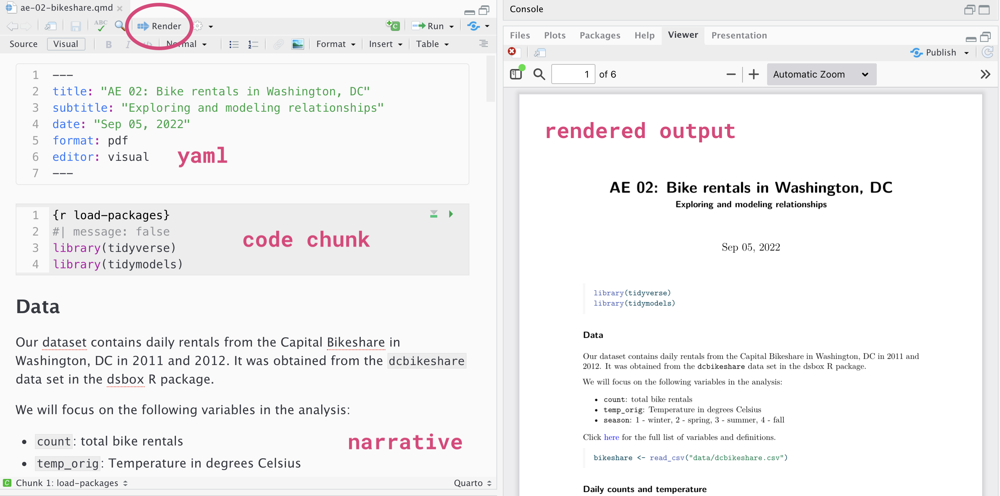

library(tidyverse)
library(tidymodels) # contains broom, yardstick, and other modeling packages
library(knitr)Lab 01: Simple linear regression
Park access
Due date
This lab is due on Thursday, September 12 at 11:59pm. To be considered on time, the following must be done by the due date:
- Final
.qmdand.pdffiles pushed to your GitHub repo - Final
.pdffile submitted on Gradescope
Introduction
This lab will go through much of the same workflow we’ve demonstrated in class. The main goal is to reinforce our demo of R and RStudio, which we will be using throughout the course both to learn the statistical concepts discussed in the course and to analyze real data and come to informed conclusions.
Note
R is the name of the programming language itself and RStudio is a convenient interface.
An additional goal is to reinforce git and GitHub, the collaboration and version control system that we will be using throughout the course.
Note
Git is a version control system (like “Track Changes” features from Microsoft Word but more powerful) and GitHub is the home for your Git-based projects on the internet (like DropBox but much better).
To make versioning simpler, is individual. In the future, you’ll learn about collaborating on GitHub and producing a single lab report for your lab team, but for now, concentrate on getting the basics down.
Learning goals
By the end of the lab, you will…
- Be familiar with the workflow using RStudio and GitHub
- Gain practice writing a reproducible report using Quarto
- Practice version control using GitHub
- Be able to produce visualizations and summary statistics to describe distributions
- Be able to fit, interpret, and evaluate simple linear regression models
Getting Started
Clone the repo & start new RStudio project
- Go to the course organization at github.com/sta221-fa24 organization on GitHub.
- Click on the repo with the prefix lab-01-. It contains the starter documents you need to complete the lab.
- Click on the green CODE button, select Use SSH (this might already be selected by default, and if it is, you’ll see the text Clone with SSH). Click on the clipboard icon to copy the repo URL.
- See the Lab 00 instructions if you have not set up the SSH key or configured git.
- In RStudio, go to File \(\rightarrow\) New Project \(\rightarrow\) Version Control \(\rightarrow\) Git.
- Copy and paste the URL of your assignment repo into the dialog box Repository URL. Again, please make sure to have SSH highlighted under Clone when you copy the address.
- Click Create Project, and the files from your GitHub repo will be displayed in the Files pane in RStudio.
- Click
lab-01.qmdto open the template Quarto file. This is where you will write up your code and narrative for the lab.
R and R Studio
Below are the components of the RStudio IDE.

Below are the components of an Quarto (.qmd) file.

YAML
The top portion of your Quarto file (between the three dashed lines) is called YAML. It stands for “YAML Ain’t Markup Language”. It is a human friendly data serialization standard for all programming languages. All you need to know is that this area is called the YAML (we will refer to it as such) and that it contains meta information about your document.
Important
Open the Quarto (.qmd) file in your project, change the author name to your name, and render the document. Examine the rendered document.
Committing changes
Now, go to the Git pane in your RStudio instance. This will be in the top right hand corner in a separate tab.
If you have made changes to your Quarto (.qmd) file, you should see it listed here. Click on it to select it in this list and then click on Diff. This shows you the difference between the last committed state of the document and its current state including changes. You should see deletions in red and additions in green.
If you’re happy with these changes, we’ll prepare the changes to be pushed to your remote repository. First, stage your changes by checking the appropriate box on the files you want to prepare. Next, write a meaningful commit message (for instance, “updated author name”) in the Commit message box. Finally, click Commit. Note that every commit needs to have a commit message associated with it.
You don’t have to commit after every change, as this would get quite tedious. You should commit states that are meaningful to you for inspection, comparison, or restoration.
In the first few assignments we will tell you exactly when to commit and in some cases, what commit message to use. As the semester progresses we will let you make these decisions.
Now let’s make sure all the changes went to GitHub. Go to your GitHub repo and refresh the page. You should see your commit message next to the updated files. If you see this, all your changes are on GitHub and you’re good to go!
Push changes
Now that you have made an update and committed this change, it’s time to push these changes to your repo on GitHub.
In order to push your changes to GitHub, you must have staged your commit to be pushed. click on Push.
Packages
We will use the following packages in today’s lab.
Data: Access to parks
Today’s data is about access to parks and other public amenities in the 100 most populated cities in the United States. The data were collected by the Trust for Public Land, a non-profit organization that advocates for equitable access to outdoor spaces. The data set we’ll use in this lab includes part of the data used for analysis in the 2021 special report Parks and Equitable Recovery; it was obtained from TidyTuesday.
Use the code below to load the data into R.
parks <- read_csv('data/parks.csv')We will be looking at the following variables:
spend_per_resident_data: Average spending per resident in US dollarspct_near_park_points: Points assigned to the city for the percentage of residents within a ten minute walk to a park
Click here for the data dictionary for the full data set.
Exercises
Goal: We want to understand the effectiveness of city investment in its residents in providing widespread access to green areas in cities in the United States. While city investments clearly affect the creation and maintenance of parks, it is also essential that access to park facilities be equitably distributed across the population.
Write all code and narrative in your Quarto file. Write all narrative in complete sentences. Throughout the assignment, you should periodically render your Quarto document to produce the updated PDF, commit the changes in the Git pane, and push the updated files to GitHub.
Important
Make sure we can read all of your code in your PDF document. This means you will need to break up long lines of code. One way to help avoid long lines of code is is start a new line after every pipe (|>) and plus sign (+).
Exercise 1
We begin with some exploratory data analysis (EDA). As a first step, let’s get a quick summary look at the data using the glimpse function.
Viewing a summary of the data is a useful starting point for analysis, especially if there are a large number of observations or variables.
glimpse(parks)How many observations are in the
parksdata frame?What information is provided in the data about the time and location of the measurements?
Exercise 2
The predictor variable for this analysis, spend_per_resident_data, is quantitative; however, from the glimpse of the data in Exercise 1, we see its data type is chr (character) in R. We would expect it to be dbl (double), the data type for numeric data.
Why did spend_per_resident_data get read by R as a character data type instead of a double? Be specific.
Exercise 3
Use the code below to transform spend_per_resident_data , so that it is correctly treated as quantitative data in R. Write a brief explanation of what each numbered line of code does.
1parks <-
parks |>
mutate(spend_per_resident_data =
2 str_replace(spend_per_resident_data,"\\$", "")) |>
mutate(spend_per_resident_data =
3 as.numeric(spend_per_resident_data))- 1
- ______
- 2
- ______
- 3
- ______
This is a good place to render, commit, and push changes to your lab-01 repo on GitHub. Write an informative commit message (e.g., “Completed exercises 1 - 3”), and push every file to GitHub by clicking the checkbox next to each file in the Git pane. After you push the changes, the Git pane in RStudio should be empty.
Exercise 4
Now we’ll examine the distributions of the variables of interest.
Make a histogram of
spend_per_resident_dataand calculate summary statistics for this variable.Comment on the features of the distribution of this variable by describing the shape, center, spread, and presence of potential outliers.
Tip
When performing data visualization, make sure that all your plots have clear and informative titles and axis labels. When investigating more complex relationships with many variables, this simple tip will save you and your readers a lot of time and confusion.
See AE 01 for example code.
Exercise 5
Next let’s explore the response variable, pct_near_park_points. Visualize the distribution of the variable and calculate summary statistics. Describe the distribution pct_near_park_points.
Exercise 6
Now let’s use bivariate exploratory data analysis to look at the relationship between spend_per_resident_data and pct_near_park_points.
- Make a scatterplot to visualize the relationship between the two variables.
- Does there seem to be a relationship between spending and park access? If so, what is the shape and direction of the relationship?
This is a another good place to render, commit, and push changes to your lab-01 repo on GitHub. Write an informative commit message (e.g. “Completed exercises 4 - 6”), and push every file to GitHub by clicking the checkbox next to each file in the Git pane. After you push the changes, the Git pane in RStudio should be empty.
Exercise 7
We have seen the mathematical formulation for simple linear regression. In particular, given a response variable \(Y\) and predictor variable \(X\), the simple linear regression model is \[Y = \beta_0 + \beta_1 X + \epsilon, \quad \epsilon \sim N(0, \sigma_\epsilon^2)\]
for some unknown regression coefficients for slope and intercept\((\beta_0, \beta_1)\). This means that the expected value of each observation lies on the regression line
\[ E(Y|X) = \beta_0 + \beta_1 X\]
Answer the following questions about simple linear regression. Your response should be in general terms about simple linear, not be specific to the parks data.
- What does \(E(Y|X) = \beta_0 + \beta_1X\) mean in terms of a given value of \(X\)?
- What is the interpretation of the coefficients \(\beta_0\) and \(\beta_1\) in terms of the expected value of \(Y\)?
Exercise 8
In class we’ve seen how matrices can be used to represent the simple linear model from the previous exercise. In particular
\[ \mathbf{Y} = \mathbf{X}\boldsymbol{\beta} + \mathbf{\epsilon} \]
Recall that the goal is to fit a model that uses spend_per_resident_data to explain variability in park_near_pct_points.Estimate regression coefficients \(\hat{\boldsymbol{\beta}}\) for the model using the matrix representation. Show any work and/or code used to get the answer.
Exercise 9
Now let’s fit the model using the lm() function in R.
- Fit the model and neatly display the output using 4 digits.
- Interpret the slope in the context of the data.
- Does it make sense of the interpret the intercept? If so, interpret the intercept in the context of the data. Otherwise, explain why not.
Exercise 10
Do you think that city expenditure on residents is a useful predictor of park access? Briefly explain your response, reporting any statistics used to make your assessment.
You’re done and ready to submit your work! render, commit, and push all remaining changes. You can use the commit message “Done with Lab 1!”, and make sure you have pushed all the files to GitHub (your Git pane in RStudio should be empty) and that all documents are updated in your repo on GitHub. The PDF document you submit to Gradescope should be identical to the one in your GitHub repo.
Submission
You will submit the PDF documents for labs, homework, and exams in to Gradescope as part of your final submission.
Warning
Before you wrap up the assignment, make sure all documents are updated on your GitHub repo. We will be checking these to make sure you have been practicing how to commit and push changes.
Remember – you must turn in a PDF file to the Gradescope page before the submission deadline for full credit.
To submit your assignment:
Access Gradescope through the menu on the STA 221 Canvas site.
Click on the assignment, and you’ll be prompted to submit it.
Mark the pages associated with each exercise. All of the pages of your lab should be associated with at least one question (i.e., should be “checked”).
Select the first page of your .PDF submission to be associated with the “Workflow & formatting” section.
Grading
| Component | Points |
|---|---|
| Ex 1 | 2 |
| Ex 2 | 2 |
| Ex 3 | 3 |
| Ex 4 | 5 |
| Ex 5 | 5 |
| Ex 6 | 5 |
| Ex 7 | 6 |
| Ex 8 | 5 |
| Ex 9 | 8 |
| Ex 10 | 5 |
| Workflow & formatting | 4 |
The “Workflow & formatting” grade is to assess the reproducible workflow and document format. This includes having at least 3 informative commit messages, a neatly organized document with readable code and your name and the date updated in the YAML.